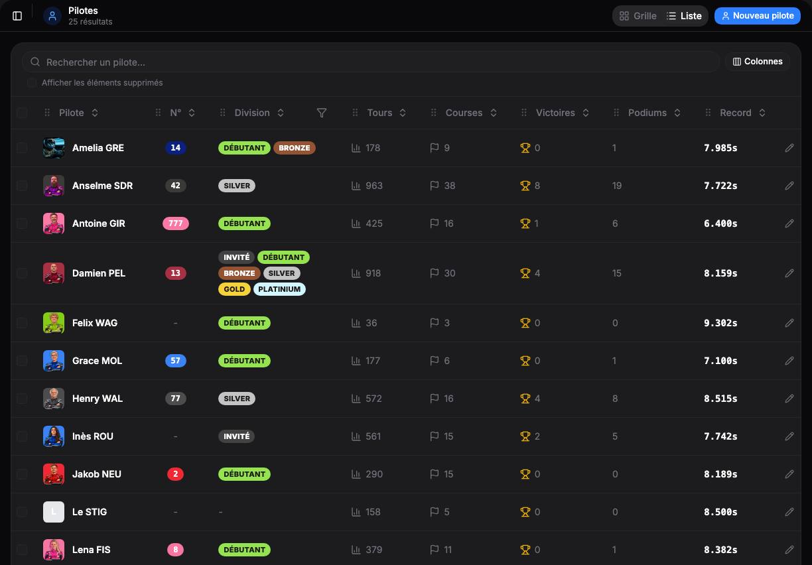
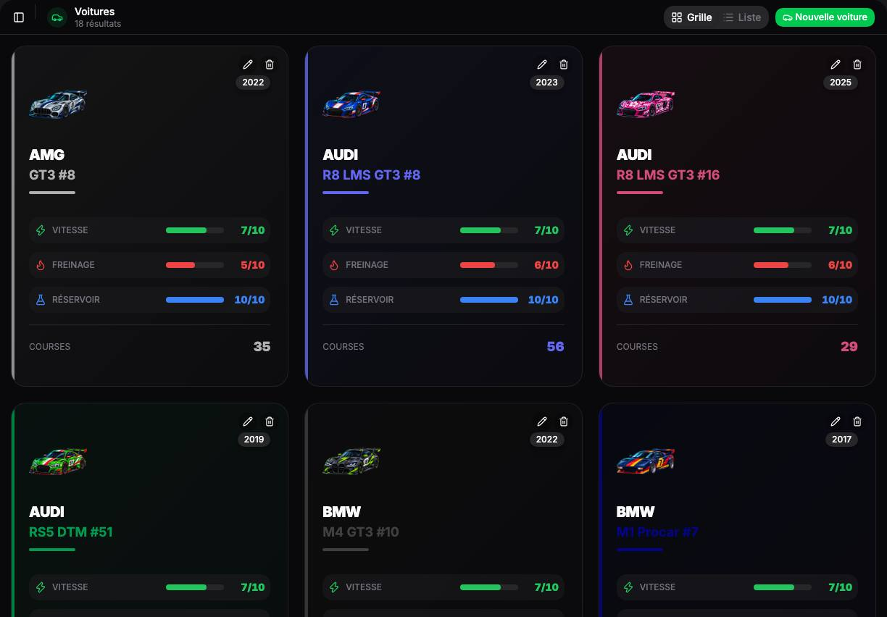
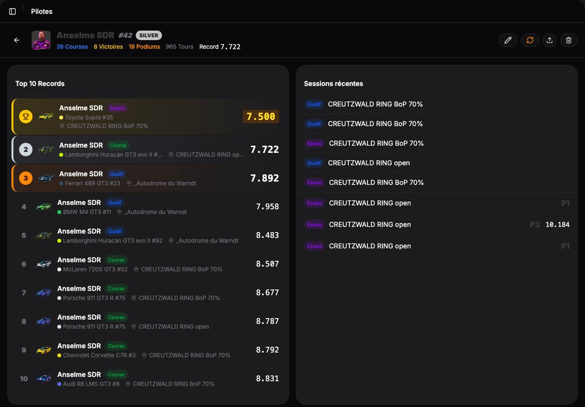
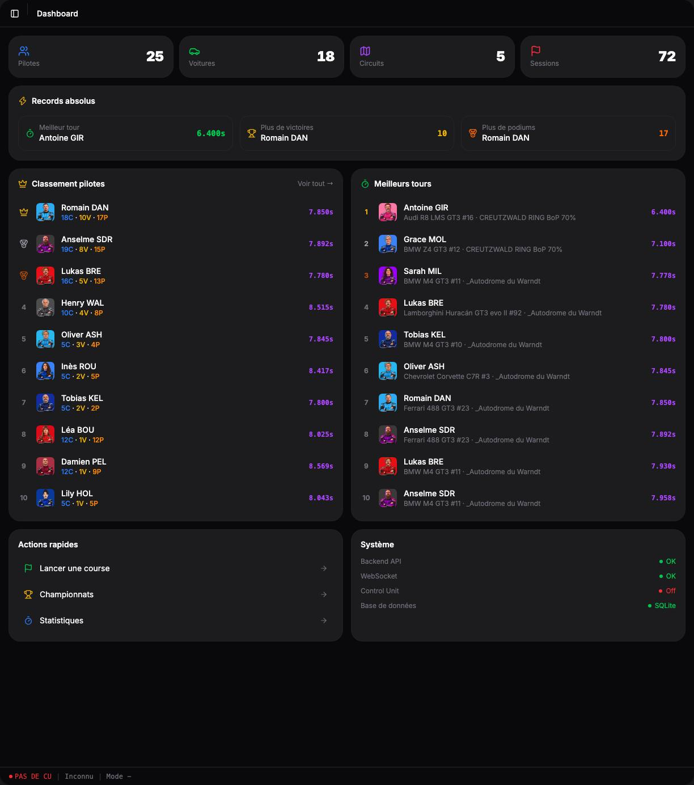
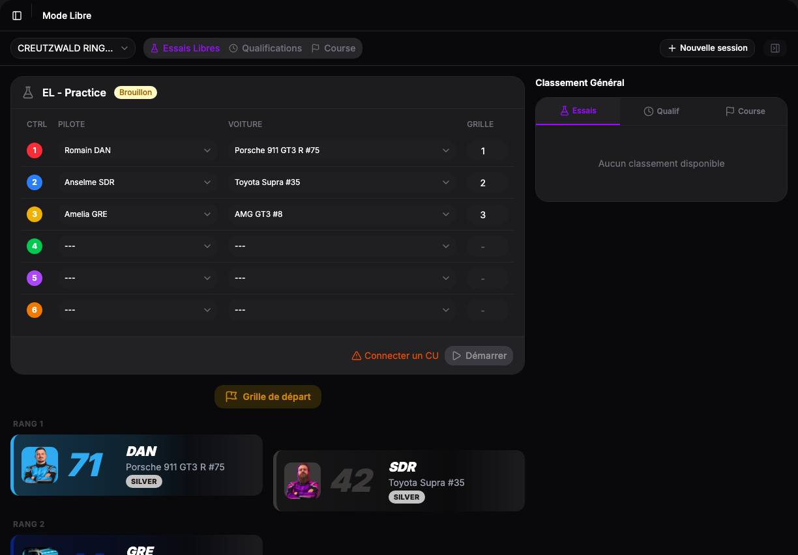
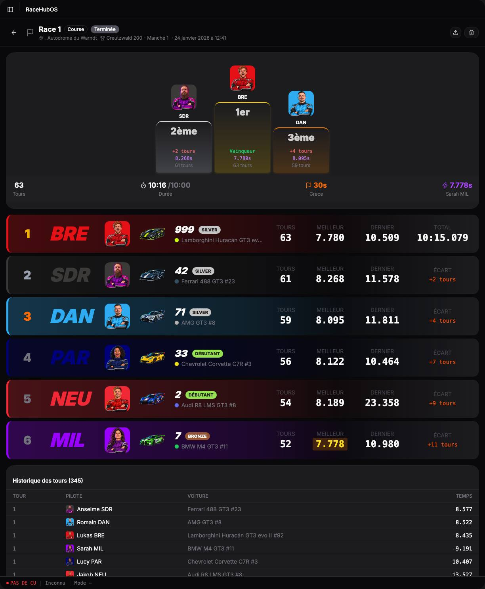
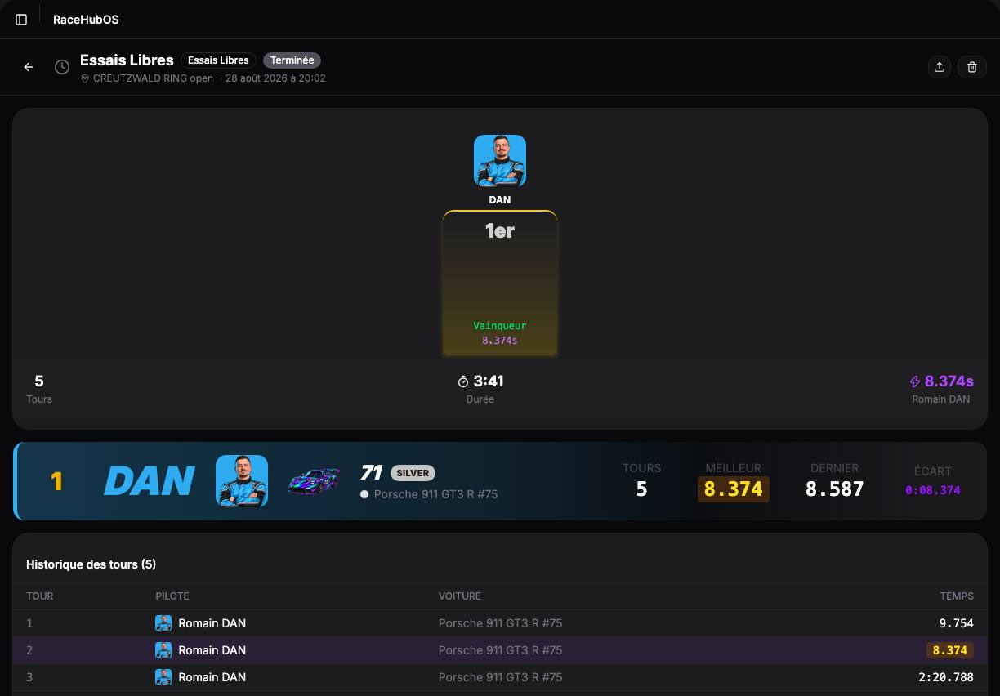
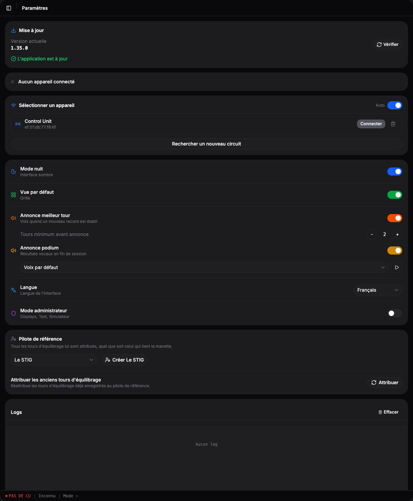

Revue des pages
On passe sur les autres pages la même grille que pour l'assistant de championnat : le skill apple-design (hiérarchie, densité, une couleur par sens, réponse immédiate, mouvement) et tes règles (rien qui flotte, du compact, des colonnes alignées, rien d'écrit deux fois). À gauche, chaque page telle qu'elle est aujourd'hui en sombre. Dessous, la proposition, faite avec les vraies données de dev.db.
Les huit sections sont indépendantes : tu peux en garder une partie, comme pour l'assistant.
Révision du 16 novembre, après ton retour. Validées : 2, 3, 5, 8, les défauts et l'ordre. La 1 est réduite à tes trois points. Les 4, 6 et 7 sont redessinées ci-dessous et restent à valider.
1 · Les listes : une ligne de 40 px, des chiffres sans icône validée, réduite
Pilotes, Championnats, Historique, Statistiques et la vue Liste des autres pages. Aujourd'hui une ligne fait 57 à 63 px, et chaque cellule répète son icône (tours, drapeau, trophée). On voit 11 pilotes sur 25. Le reste de la liste ne change pas : barre de recherche, cases à cocher, crayon, poignées et flèches des en-têtes restent comme aujourd'hui.

- Lignes de 40 px : 17 pilotes à l'écran au lieu de 11.
- Les chiffres sont alignés à droite, sans icône : leur sens est dit une fois, dans l'en-tête.
- Deux divisions au plus, puis « +4 ». Au survol (ou au focus clavier) du « +4 », les autres s'affichent dans une bulle. La ligne de Damien PEL ne passe plus sur trois lignes.
2 · Les grilles : six voitures par ligne au lieu de trois validée
Voitures, Circuits et Divisions en vue Grille. Une carte de voiture fait 470 px de haut pour une petite image et trois réglages, soit 3 voitures par écran. Le nom de la voiture prend sa couleur : « M1 Procar #7 » est illisible (bleu nuit sur noir). Un circuit sans image montre une épingle générique. Le nom d'une division est écrit trois fois (logo, badge, titre).

- Voiture : l'illustration devient l'identité de la carte, posée sur un halo de sa couleur. Le texte reste dans la couleur du texte, donc toujours lisible. Les trois réglages tiennent sur une ligne de barres, et 18 voitures sur trois rangées.
- Circuit : une ligne de 60 px avec sa couleur ou son image, et sa longueur, ses virages et ses sessions.
- Division : logo et nom une seule fois, l'échelon en petit, les visages des membres. Leur couleur ne sert plus qu'au liseré du haut.
- Crayon et corbeille quittent chaque carte : ils restent dans la fiche.
3 · Les fiches : rien d'écrit deux fois validée
Fiches pilote, voiture, circuit et division. Sur la fiche d'Anselme SDR, ses 10 records répètent tous « Anselme SDR », sur des lignes de 60 px, et les trois premiers ont un fond en dégradé. Son nom en tête prend sa couleur (#3b3a38) et sort gris foncé sur fond noir. Les sessions récentes affichent un « P1 » grisé sans temps.

- Le nom en tête est en couleur de texte. La couleur du pilote reste sur sa photo et sur son numéro.
- Records : rang, voiture (image et nom), circuit, type et temps, en colonnes alignées sur 36 px. Le podium se lit à l'or, à l'argent et au bronze du rang, sans fond en dégradé.
- Sessions récentes : date, type, session, circuit, place et meilleur tour, chacun dans sa colonne. Une session pas encore courue garde ses cases vides.
- Même règle sur les fiches voiture (sans répéter la voiture) et circuit (sans répéter le circuit).
- Fiche division : aujourd'hui, la ligne de Damien PEL n'affiche plus son nom, mangé par ses 6 badges. Sur la fiche d'une division, on n'affiche plus les badges des membres (ils sont tous de cette division). Et le panneau vide « Aucun championnat ne se court pour cette division » disparaît : « 0 championnat » est déjà en tête.
4 · Le tableau de bord : maintenant, récemment, depuis toujours refaite, à valider
La première version ne faisait que tasser les mêmes blocs. Or l'accueil d'aujourd'hui ne dit rien de ce qui se passe : quatre compteurs, trois records qui sont la première ligne des tableaux du dessous, puis « Actions rapides » (trois liens de la barre latérale) et « Système » (« Backend API : OK »). Le championnat en cours n'y est pas, les dernières sessions non plus.

- Maintenant : le championnat en cours, ses sessions dans l'ordre de passage (les pastilles du bandeau et du bracket), la prochaine session avec ses pilotes, et « Reprendre ». Une session qui tourne prend cette place (le bandeau vert d'aujourd'hui). Sans championnat en cours : le dernier terminé et « Nouveau championnat ».
- Récemment : les dernières sessions terminées, avec le premier et le meilleur tour. Une ligne ouvre la fiche de la session.
- Depuis toujours : classement et meilleurs tours en colonnes titrées, plus de « 18C · 10V · 17P » à décoder. Le meilleur de chaque colonne est en or : la carte « Records absolus » disparaît, elle répétait ces trois chiffres.
- Disparaissent aussi : les quatre tuiles (une ligne de liens sous le titre), « Actions rapides » et « Système ». L'état du CU est déjà dans la barre du bas (« PAS DE CU ») ; l'API et le WebSocket ne se signalent que s'ils tombent.
- Chaque bloc reste son propre module, pour les add-ons.
5 · Course libre et équilibrage : « Démarrer » répond toujours validée
Sans CU, « Démarrer » est grisé, et un avertissement orange « Connecter un CU » est posé à côté. Le panneau de droite dit « Aucun classement disponible ». En équilibrage, le champ « Temps max » a pour indication « 0 = pas de filtre ».

- « Démarrer » n'est jamais grisé. Sans CU, il ouvre au-dessus de lui la liste des CU connus, avec « Connecter », et « Rechercher un CU ». Une fois connecté, la course part. L'avertissement orange disparaît.
- Le classement montre déjà les pilotes de la grille, avec des tirets à la place des temps, au lieu de « Aucun classement disponible ».
- Équilibrage : un champ vide veut dire « sans limite ». Plus de 0 écrit par défaut, ni de « 0 = pas de filtre ».
6 · La fiche de session : les tours en tableau dessinée, à valider
La première version n'était que du texte, d'où « je ne vois pas la différence ». La voici dessinée sur deux vraies sessions. Aujourd'hui, l'historique d'une course de 6 pilotes fait 345 lignes, avec le pilote et sa voiture réécrits sur chacune : impossible de comparer deux pilotes au même tour. Et un essai d'un seul pilote ouvre sur un podium « 1er · Vainqueur ».


- Tours : une ligne par tour, une colonne par pilote, dans l'ordre d'arrivée. 63 lignes au lieu de 345, et deux pilotes se comparent au même tour. Le meilleur tour de chaque pilote est en or, celui de la session en violet (les couleurs du classement). L'en-tête reste visible quand on fait défiler.
- Avec un seul pilote, les tours se rangent en colonnes sur la largeur, sans pilote ni voiture répétés.
- Podium : seulement pour une course d'au moins deux pilotes. Un essai ou une qualif ouvre sur son classement.
- Résumé (tours, durée, meilleur tour) : dans l'en-tête, à droite. Aujourd'hui il est sous le podium, et disparaîtrait avec lui.
- Le classement lui-même ne change pas.
7 · Réglages et add-ons refaite, à valider
Ma première version était fausse : elle fondait « Tours minimum avant annonce » dans un sous-titre de « Annonce meilleur tour », et oubliait la voix, la langue, le mode administrateur, le pilote de référence, l'état du CU et le journal. J'ai relu le code de la page : sept cartes, quinze réglages et actions. Les voici tous, chacun avec sa commande.

Control Unit Non connectéConnecté
Journal · aucune entrée
Pilote de référence
Application
Affichage
Annonces vocales
- L'annonce du meilleur tour et « Tours minimum avant annonce » sont deux réglages, chacun sur sa ligne : un interrupteur, puis le compteur − 2 + (essaie-les). Comme aujourd'hui, le compteur ne s'affiche que si l'annonce est active, et la voix que si une des deux annonces l'est. La voix a enfin son intitulé.
- Control Unit : aujourd'hui trois ou quatre cartes (« Aucun appareil connecté », « Sélectionner un appareil », « État du Device », « Logs »). Un seul panneau : l'état dans le titre, le CU connu avec « Connecter » ou « Déconnecter », la connexion automatique, « Rechercher un CU » (aujourd'hui « Rechercher un nouveau circuit »), l'état du CU une fois connecté, et le journal replié (il s'ouvre d'un clic). Bascule « CU connecté » au-dessus pour voir l'autre état.
- Affichage : thème et vue par défaut sont des choix entre deux valeurs, donc des boutons segmentés dont la pastille glisse, pas des interrupteurs. La langue garde sa liste.
- Application : la version et son état sur une ligne, avec « Vérifier » ; une nouvelle version y affiche « Mettre à jour ». Le mode administrateur garde son sous-titre, qui dit ce qu'il ouvre.
- Un seul bleu pour tous les interrupteurs (aujourd'hui bleu, vert, orange, jaune, violet), et plus d'icône colorée devant chaque ligne. Les sous-titres qui répètent l'intitulé disparaissent (« Mode nuit · Interface sombre », « Langue · Langue de l'interface »), et sous un titre « Annonces vocales » les lignes s'appellent « Meilleur tour » et « Podium ». Les sous-titres qui expliquent restent.
- Deux colonnes : l'interrupteur n'est plus à 1 100 px de son intitulé.
- Add-ons : la phrase « Placé à la main dans addons/ : l'app ne le met jamais à jour ni ne le supprime » devient l'infobulle de l'étiquette « Dossier local ». La liste des fichiers du cœur modifiés se replie sous l'add-on (« 2 fichiers du cœur »).
8 · Le mouvement, partout validée
Ce que l'assistant fait déjà, étendu au reste de l'app.
- Toutes les commandes segmentées (Grille | Liste, Pilotes | Voitures, Essais | Qualif | Course, onglets des add-ons) : la pastille glisse d'un choix à l'autre, comme ci-dessus.
- Une ligne ou une carte répond à l'appui (légère compression), pas au relâchement.
- De la liste à la fiche, la photo du pilote (ou l'image de la voiture) vole de la ligne jusqu'à l'en-tête de la fiche, et y retourne au retour.
- Grille ↔ Liste : les éléments glissent de leur place dans l'une à leur place dans l'autre au lieu de sauter.
- Tout se coupe avec « Réduire les animations » du système.
Défauts vus en passant validés
- Une couleur de fiche utilisée comme couleur de texte sans vérifier le contraste : le nom d'Anselme SDR en tête de sa fiche, « M1 Procar #7 » sur la grille des voitures, et dans le classement de course les codes SDR et PAR, presque invisibles sur fond sombre (capture de la section 6).
- Fiche division : le nom de Damien PEL disparaît derrière ses badges.
- Fiche pilote : « 39 courses » en tête compte en fait ses 39 sessions, essais et qualifs compris. Anselme SDR a couru 23 courses.
- Réglages : « Rechercher un nouveau circuit » cherche un CU.
- Le titre du tableau de bord reste « Dashboard » en français.
Ordre validé
- D'abord les tests qui manquent sur les pages touchées, avant toute modification.
- Les défauts ci-dessus.
- Les listes (1, les trois points), puis les fiches (3).
- Les grilles (2), puis le tableau de bord (4) une fois validé.
- « Démarrer » qui répond toujours (5), puis la fiche de session (6) une fois validée.
- Réglages et add-ons (7) une fois validés, puis le mouvement (8) page par page.